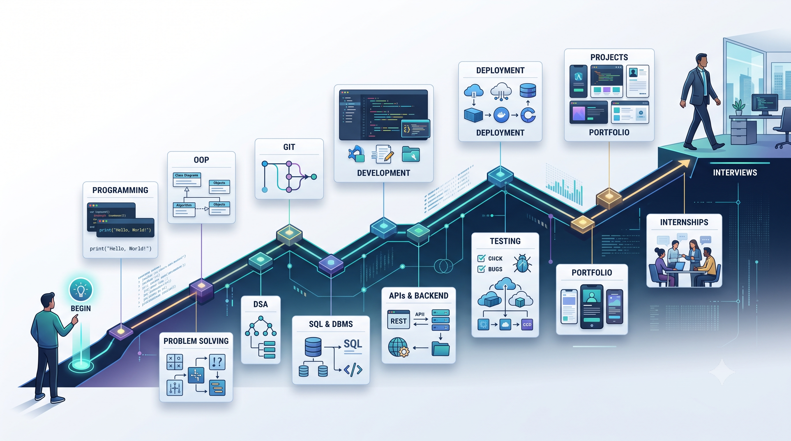
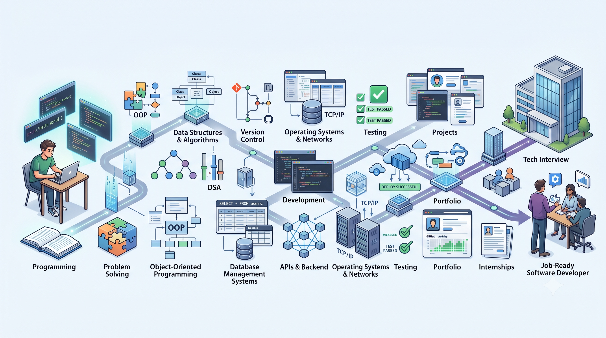

1. Quick Answer: The Computer Science Roadmap
A practical progression looks like this:
Programming Fundamentals → Problem Solving → OOP → DSA → Git → SQL & DBMS → Development → APIs & Backend → OS & Networks → Testing & Debugging → Deployment → Projects → Portfolio → Internships → Interviews
You don't have to completely master one stage before touching the next. Projects and practice should run alongside the roadmap.
| Stage | Main goal | Readiness milestone |
|---|---|---|
| 1. Programming Fundamentals | Learn how to code | Write small programs independently |
| 2. Problem Solving | Learn to approach unfamiliar problems | Break problems into steps before coding |
| 3. OOP | Structure larger programs | Build a multi-class application |
| 4. DSA | Develop algorithmic thinking | Solve common problems and explain your approach |
| 5. Git | Track development work | Commit, branch and recover changes confidently |
| 6. SQL & DBMS | Work with persistent data | Design tables and write useful queries |
| 7. Development Path | Build real applications | Complete a small application in your chosen area |
| 8. APIs & Backend | Connect application components | Build and consume a basic API |
| 9. OS & Networks | Understand the environment software runs in | Explain core concepts and troubleshoot basic issues |
| 10. Testing & Debugging | Make software reliable | Find, reproduce and fix bugs systematically |
| 11. Deployment | Make applications usable outside your laptop | Deploy a working project |
| 12. Projects | Turn knowledge into evidence | Complete projects you can explain independently |
| 13. Portfolio & Resume | Present your abilities | Clearly demonstrate your strongest work |
| 14. Internship Preparation | Become application-ready | Apply and explain your skills and projects |
| 15. Interview Preparation | Demonstrate your knowledge | Handle coding, technical and behavioral questions |

The important thing isn't completing every bullet in this table. It's reaching the capability described by each milestone.
What This Roadmap Is Actually Trying to Solve
There are three common problems beginners face.
Problem 1: Learning technologies without understanding fundamentals
A beginner might jump straight into:
React → Node.js → MongoDB → Docker → AWS
without being comfortable writing a basic program, understanding functions, debugging code or working with SQL.
That creates a technology-heavy skill set with weak foundations.
Frameworks and tools change. Fundamental programming concepts remain useful across languages and technologies.
Problem 2: Trying to learn everything at once
You might find a roadmap containing:
- C
- C++
- Java
- Python
- JavaScript
- HTML
- CSS
- React
- Node.js
- SQL
- MongoDB
- Docker
- Kubernetes
- AWS
- Git
- Linux
- DSA
- System Design
- Machine Learning
and conclude:
“I need to learn all of this.”
You don't.
A good roadmap should tell you what to postpone, not just what to learn.
Problem 3: Learning without building
You can finish dozens of tutorials and still struggle when someone asks:
“Build something without following the tutorial.”
That's why projects appear throughout this roadmap.
The objective isn't:
Learn → Learn → Learn → Learn → Job
It is:
Learn → Practice → Build → Understand → Build something harder → Apply

Start With Programming Fundamentals
Programming is the foundation.
Before worrying about frameworks or difficult interview problems, you need to become comfortable giving a computer precise instructions.
Start with one programming language.
Reasonable first choices include:
- Python
- Java
- C++
- JavaScript
There isn't one universally correct choice.
Choose based on your direction
Python is a practical choice for general programming, automation, data and AI-related paths.
Java is a strong option for students interested in object-oriented programming and Java-based backend development.
C++ can be useful for students interested in performance-oriented programming or competitive programming.
JavaScript is a natural choice if your immediate goal is web development.
The important rule is:
One language deeply is better than four languages superficially.
You can learn another language later when you have a reason to use it.
What to learn first
Your first programming stage should cover:
- Variables
- Data types
- Operators
- Input and output
- Conditional statements
- Loops
- Functions
- Arrays or lists
- Strings
- Basic collections
- Error handling
- File handling
- Basic debugging
Don't rush through these simply because they look easy.
Eventually, you should be able to look at a small problem and think:
“I know how to break this down and write the solution.”
Readiness milestone
You're ready to move forward when you can build small programs without copying the implementation line by line.
Examples:
- Calculator
- Number guessing game
- Unit converter
- Quiz application
- Student marks calculator
- Contact list
- Basic command-line to-do application
You don't need to build all of them.
A few small programs that you genuinely understand are enough.
2. Learn Problem Solving
Knowing syntax isn't the same as knowing how to program.
Suppose someone asks:
“Find the largest number in an array.”
Knowing a for loop helps.
But the real skill is deciding:
- What information do I need?
- What should I track?
- How should I move through the array?
- What happens with an empty array?
- What should happen with duplicate values?
That's problem solving.
Use a repeatable process
Before writing code:
Step 1: Understand the problem
What exactly is being asked?
Step 2: Identify the input
What information are you receiving?
Step 3: Identify the output
What must your program produce?
Step 4: Work through an example
Solve a small example manually.
Step 5: Design the logic
Write the solution in plain language or pseudocode.
Step 6: Code it
Only now should you write the implementation.
Step 7: Test it
Try normal cases, edge cases and unexpected inputs.
This habit becomes particularly valuable when you reach DSA and technical interviews.
Readiness milestone
You don't need to solve difficult problems yet.
You should be able to take an unfamiliar beginner-level problem, explain your approach before coding, implement it and test the result without immediately searching for the solution.
3. Learn Object-Oriented Programming
Once you're comfortable with basic programming, learn how to structure larger programs.
This is where Object-Oriented Programming (OOP) becomes important.
Core concepts include:
- Classes
- Objects
- Constructors
- Encapsulation
- Inheritance
- Polymorphism
- Abstraction
- Interfaces where applicable
- Composition
Don't learn these only as definitions.
Ask:
“What problem does this concept solve?”
Imagine you're building a library-management system.
You might have:
BookStudentLibrarianLibraryTransaction
Instead of putting everything into one enormous program, OOP provides ways to organize related data and behavior.
Readiness milestone
Build a small application containing multiple interacting classes.
Examples:
- Library management system
- Bank account simulator
- Student management system
- Inventory system
You should be able to explain why you created each class and how the objects interact.
If you can only repeat definitions such as “polymorphism means...” but cannot use the concepts in a project, spend more time practicing.
4. Learn Data Structures and Algorithms
Now you're ready for one of the most important parts of a computer science roadmap:
Data Structures and Algorithms (DSA).
DSA isn't only an interview subject. It teaches you how to represent information and solve problems efficiently.
Learn data structures progressively
A sensible progression is:
- Arrays
- Strings
- Linked Lists
- Stacks
- Queues
- Hash Tables / Hash Maps
- Trees
- Heaps / Priority Queues
- Graphs
Then explore more specialized structures when your goals require them.
Learn algorithms alongside them
Important areas include:
- Searching
- Sorting
- Recursion
- Two pointers
- Sliding window
- Hashing
- Tree traversal
- Graph traversal
- Greedy algorithms
- Dynamic programming
- Backtracking
Don't try to memorize hundreds of solutions.
Instead ask:
Why does this solution work?
and:
Why is this solution more efficient than another approach?
Learn complexity
You should gradually become comfortable with:
- Time complexity
- Space complexity
- Big-O notation
You don't need to turn every beginner exercise into a theoretical analysis exercise.
But you should develop the habit of asking:
“How much work does this solution perform as the input grows?”
Readiness milestone
You're ready to rely more heavily on DSA for interview preparation when you can:
- Recognize common problem patterns
- Choose an appropriate data structure
- Explain your approach before coding
- Estimate basic time and space complexity
- Solve common problems without copying the solution
- Explain why your solution works
You do not need to finish every advanced DSA topic before starting development projects.
Keep both tracks moving.
5. Learn Git and a Development Workflow
Git is a version-control system used to track changes in software projects. GitHub is a separate platform that provides hosted repositories and development workflows around Git.
Start with:
- Repository
- Commit
- Status
- Add
- Branch
- Merge
- Log
- Diff
- Pull
- Push
More important than memorizing commands is understanding why version control exists.
Imagine spending three weeks building a project and then breaking something while experimenting.
With version control, you can inspect previous changes and work with a history of the project instead of treating the project folder as one irreversible state.
Git vs GitHub
These aren't interchangeable terms.
Git handles version control.
GitHub provides a hosted platform and collaboration features around Git repositories.
You can learn Git locally without immediately publishing every project.
Later, GitHub can become useful for:
- Sharing projects
- Collaboration
- Pull requests
- Open-source contributions
- Portfolio visibility
- Project documentation
Readiness milestone
You should be able to:
- Create or clone a repository
- Make meaningful commits
- Inspect changes
- Create a branch
- Merge changes
- Recover from common mistakes
- Push a project when appropriate
- Explain what your commit history represents
At this point, version control should become part of your normal development workflow rather than another topic you “study.”
6. Learn SQL and Database Fundamentals
Most useful software needs to store data.
A student-management application needs students. An e-commerce application needs products and orders. A social application needs users and interactions.
That is where databases come in.
Start with SQL and relational database concepts.
Learn:
- Tables
- Rows and columns
- Primary keys
- Foreign keys
- Relationships
SELECTINSERTUPDATEDELETE- Filtering
- Sorting
- Aggregation
- Joins
- Grouping
- Constraints
- Indexes
- Transactions
- Normalization
You don't need to learn every database product.
First understand the underlying concepts.
Readiness milestone
Build an application that stores real data.
For example, a student-management system could store:
- Students
- Courses
- Marks
- Attendance
Then write queries that retrieve and manipulate that information.
Once you can connect your program to a database and understand what happens when data is created, read, updated and deleted, you're ready to move toward larger applications.
7. Choose One Development Path
This is where many beginner roadmaps become confusing.
They list ten technologies and make it look as though you need all of them.
You don't.
After building your foundation, choose one primary development direction.
You can explore other areas later.
Path A: Web / Full-Stack Development
A practical progression:
HTML → CSS → JavaScript → Frontend → Backend → Database → Deployment
Learn frontend fundamentals before jumping into a framework.
Later, depending on your goals, you can add technologies such as React and a backend framework.
Choose this if:
You enjoy building websites and interactive applications and want to see your work directly in a browser.
Path B: Java Backend Development
A practical progression:
Java → OOP → SQL → HTTP → REST APIs → Spring/Spring Boot → Database → Testing → Deployment
Choose this if:
You enjoy backend logic, Java and building server-side applications.
This path also fits naturally with a student who has already chosen Java for programming and DSA.
Path C: Python Backend Development
A practical progression:
Python → OOP → SQL → Web fundamentals → Backend framework → APIs → Database → Testing → Deployment
Choose this if:
You enjoy Python and want to build backend applications while keeping the language itself relatively lightweight.
Path D: Another Specialization
You can later branch toward:
- Mobile development
- AI/ML
- Data engineering
- Cybersecurity
- DevOps
- Cloud
- Game development
- Systems programming
These are legitimate paths, but don't branch simply because a technology is popular.
Choose based on what you want to build and the roles you eventually want to pursue.
The decision rule
If you're unsure which path to choose, don't spend months researching every possible career.
Build your fundamentals first.
Then ask:
“What kind of software do I actually want to build?”
If the answer is:
- Websites and web applications → Web/full-stack
- Server-side Java applications → Java backend
- Python-based applications → Python/backend
- Intelligent systems → AI/ML
- Security tools and infrastructure → Cybersecurity
- Mobile applications → Mobile development
- Infrastructure and deployment → Cloud/DevOps
You don't have to commit forever.
You're choosing your next direction, not your entire career.
Readiness milestone
You should be able to build one small application in your chosen path without following a tutorial step by step.
That is the point at which your development path becomes real rather than theoretical.
8. Learn APIs and Backend Development
Once you start building applications, you'll encounter APIs.
In web applications, HTTP uses a client-server model where clients send requests and servers return responses. HTTP APIs use this communication model to allow software components to interact.
You should understand:
- Client
- Server
- Request
- Response
- URL
- HTTP methods
- Status codes
- Headers
- JSON
- Authentication
- CRUD operations
- REST-style API design
A useful mental model is:
Frontend
↓
HTTP Request
↓
Backend API
↓
Database
↓
Backend
↓
HTTP Response
↓
FrontendThis becomes much easier to understand when you've actually built one.
Don't ignore API security
As your applications become more realistic, security becomes part of development rather than something to add at the end.
For example, API developers need to think about authorization, authentication, input handling, resource consumption and configuration. OWASP's API Security Top 10 includes risks such as broken object-level authorization, broken authentication, unrestricted resource consumption and security misconfiguration.
You don't need to become a security specialist at this stage.
But you should develop the habit of asking:
“Who is allowed to perform this action, and what data should they be able to access?”
Readiness milestone
Build a small API that can:
- Create data
- Read data
- Update data
- Delete data
For example:
POST /tasks
GET /tasks
GET /tasks/:id
PUT /tasks/:id
DELETE /tasks/:idThen connect it to a frontend or another client.
At this point, you're beginning to understand how real software systems fit together.
9. Learn Operating Systems
You don't need to become a kernel developer.
But a strong computer science foundation should include an understanding of what happens underneath your programs.
Important topics include:
- Processes
- Threads
- Scheduling
- Memory management
- Virtual memory
- File systems
- Concurrency
- Synchronization
- Deadlocks
For example, when you run a program, the operating system manages resources and provides the environment in which that program executes.
That knowledge becomes useful when you're debugging performance, concurrency or resource-related problems.
What to postpone
You don't need to memorize every operating-system implementation detail before building software.
Learn the major concepts first.
Go deeper when your coursework, interviews, projects or specialization requires it.
Readiness milestone
You should be able to explain, at a basic level:
- What a process is
- How a thread differs from a process
- Why memory management matters
- What virtual memory is trying to achieve
- Why race conditions and deadlocks can occur
That's enough foundation for most beginner software-development paths.
10. Learn Computer Networks
Software rarely exists alone.
Applications communicate with other applications and systems.
Start with:
- IP addresses
- DNS
- TCP/IP
- HTTP/HTTPS
- Ports
- Client-server architecture
- Routers
- Basic networking concepts
- Basic security concepts
You don't need to become a network engineer.
Your first goal is to understand what happens when you enter a URL into a browser.
HTTP operates at the application layer and follows a client-server request/response model.
That knowledge becomes particularly useful when working with APIs, backend systems and debugging.
Readiness milestone
You should be able to explain a simple request flow:
Browser
↓
DNS / Network
↓
Server
↓
Application
↓
Database
↓
Response
↓
BrowserYou don't need to explain every packet in detail.
You need enough understanding to reason about where a problem might occur.
11. Learn Testing and Debugging
Beginners often think:
“If the program runs, I'm finished.”
Software can run and still be wrong.
You need to learn how to:
- Reproduce bugs
- Read error messages
- Use a debugger
- Add useful logging
- Test edge cases
- Write unit tests
- Test APIs
- Verify database operations
- Identify regression bugs
Use a repeatable debugging process
1. Reproduce it
Can you make the problem happen consistently?
2. Isolate it
Which part of the system is failing?
3. Inspect the evidence
Look at:
- Error messages
- Logs
- Inputs
- Outputs
- Network requests
- Database results
4. Form a hypothesis
What do you think is causing the problem?
5. Test the hypothesis
Make the smallest useful change.
6. Verify
Did the fix actually solve the original problem?
This is much better than randomly changing code until the error disappears.
Readiness milestone
You should be able to take a broken project, reproduce a bug, identify the likely source, fix it and explain why the fix worked.
That last part matters.
Debugging isn't simply making an error disappear. It's understanding the cause.
12. Learn Deployment
Eventually your application needs to leave your laptop.
Deployment means making your software available in an environment where other people or systems can use it.
Gradually learn:
- Hosting
- Environment variables
- Build processes
- Domains
- HTTPS
- Application configuration
- Logs
- Basic monitoring
- Database deployment
- Secrets management
You don't need to master every cloud platform.
Start by deploying a small application.
Your first deployment doesn't need to handle millions of users.
It needs to work reliably enough for someone else to open and use.
Readiness milestone
Someone who doesn't have your development environment should be able to access your deployed application and use its main functionality.
You should also know where to look when the deployed version doesn't behave like your local version.
13. Build Projects Throughout the Roadmap
This is where everything starts coming together.
Don't wait until you've "finished computer science."
Build while learning.
Project Level 1 — Beginner
Use projects to reinforce programming.
Examples:
- Calculator
- Quiz application
- Expense tracker
- Contact manager
- Student marks system
Goal
Prove that you can program.
Project Level 2 — Intermediate
Combine programming with databases or larger application logic.
Examples:
- Library management system
- Task manager
- Inventory management system
- Personal finance tracker
- Student management application
Goal
Prove that you can structure an application and work with data.
Project Level 3 — Full Application
Combine:
Frontend + Backend + Database + Authentication + API + Deployment
Examples:
- College productivity platform
- Job application tracker
- Study management platform
- Event management system
- E-commerce prototype
- Collaborative task application
Goal
Prove that you can build and connect multiple parts of a software system.
Project Level 4 — Problem-focused project
Now build something because you identified a real problem rather than because a tutorial told you what to build.
Goal
Prove that you can make technical decisions independently.
This is often the most valuable project level for a portfolio.
14. Build Projects That Show Progress
A strong portfolio doesn't need 30 projects.
A better progression is:
Project 1
“I can program.”
Project 2
“I understand data and application structure.”
Project 3
“I can build and connect a complete application.”
Project 4
“I can identify a problem and build a solution independently.”
That progression tells a stronger story than a folder containing dozens of tutorial clones.
15. Prepare Your Portfolio and GitHub
Once you have projects worth showing, organize them properly.
Each serious project should ideally have:
- Clear project name
- Problem statement
- Features
- Technologies used
- Setup instructions
- Screenshots where useful
- Architecture explanation where appropriate
- Challenges encountered
- What you learned
- Future improvements
A repository should be understandable to another developer.
GitHub supports software-development workflows including planning, collaboration and repositories, which makes it useful as part of a development portfolio.
But remember:
A polished repository cannot compensate for a weak project.
The project itself comes first.
Readiness milestone
Someone viewing your repository should be able to understand:
- What the project does
- Why you built it
- How to run it
- What technologies you used
- What you personally implemented
You should also be able to explain the project without reading your README.
16. Prepare Your Resume
Your resume should communicate three things quickly:
What can you do?
What have you built?
What evidence supports your skills?
Instead of:
“Learned Java, SQL, HTML, CSS and Git.”
A stronger project description explains what you actually built and what you contributed.
For example:
Built a task-management application using Java, REST APIs and SQL, implementing task creation, updates, deletion and persistent database storage.
The second version provides evidence.
Readiness milestone
You should have enough evidence to identify:
- Your strongest technical skills
- Your strongest projects
- Your relevant coursework
- Your development direction
- The type of internship you're targeting
Then your resume can be built around those strengths rather than around a giant list of technologies.
17. Start Preparing for Internships
Don't wait until you're "perfect."
Internship preparation can begin once you have:
- One programming language
- Basic DSA
- At least one meaningful project
- Basic Git
- Basic SQL
- A resume
- A way to explain your projects
Then continue improving while applying.
What should you be able to explain?
If an interviewer asks:
“Tell me about your project.”
You should be able to explain:
- What problem it solves
- Why you built it
- How it works
- Technologies used
- Database structure
- API design
- Biggest challenge
- A bug you encountered
- How you fixed it
- What you would improve
If you built the project yourself, these questions become much easier.
Internship readiness checkpoint
Before applying seriously, you should ideally have:
Programming: One language you can use independently.
DSA: Enough practice to handle common beginner/intermediate problems.
Development: At least one meaningful project.
Database: Basic SQL and database understanding.
Git: Comfortable enough to manage your projects.
Resume: Focused on evidence rather than buzzwords.
Communication: Able to explain your technical decisions clearly.
You don't need to be an expert in every category.
You need enough ability to demonstrate that you're worth interviewing.
18. Prepare for Technical Interviews
Interview preparation should happen alongside development rather than replacing it.
DSA
Focus on:
- Arrays
- Strings
- Hashing
- Linked lists
- Stacks and queues
- Trees
- Graphs
- Searching
- Sorting
- Recursion
- Dynamic programming
CS fundamentals
Depending on the role:
- OOP
- DBMS
- SQL
- Operating systems
- Computer networks
Programming
You should be able to write code without relying on autocomplete or AI to do the thinking for you.
Projects
Be ready to discuss everything you actually built.
Behavioral questions
Prepare for questions such as:
- Tell me about yourself.
- Tell me about a project you're proud of.
- Describe a difficult problem you solved.
- Tell me about a mistake you made.
- Why are you interested in this role?
What You Should NOT Learn Yet
This may be the most important part of the roadmap.
You do not need to learn everything immediately.
If you're still struggling with loops and functions, don't start Kubernetes.
If you haven't built a basic backend, don't spend weeks studying microservices.
If you haven't learned SQL, don't rush into advanced database architecture.
If you haven't built and deployed a normal application, you probably don't need advanced cloud architecture yet.
If you're still learning basic DSA, don't obsess over advanced competitive-programming techniques unless that is specifically your goal.
A useful rule
Learn the next concept that unlocks the next capability.
Not:
“Learn whatever technology is trending this month.”
This is one of the biggest differences between a roadmap and a technology checklist.
The Recommended Progression
A realistic sequence looks like this:
Programming Fundamentals
↓
Problem Solving
↓
Object-Oriented Programming
↓
DSA + Small Projects
↓
Git + Development Workflow
↓
SQL + Database Fundamentals
↓
Choose One Development Path
↓
Build Applications
↓
APIs + Backend
↓
Testing + Debugging
↓
Operating Systems + Networks
↓
Deployment
↓
Stronger Projects
↓
Portfolio + Resume
↓
Internship Applications
↓
Interview PreparationNotice something important:
Projects are not at the end.
They should appear throughout the roadmap.
Your first project may be a simple calculator.
Your later project might be a deployed application with a database and API.
The increasing complexity is what demonstrates progress.
A Complete Example
Imagine a beginner named Alex who wants to become a software developer.
Phase 1
Alex learns programming fundamentals.
They build:
Calculator → Quiz → Expense Tracker
Now Alex can write small programs.
Phase 2
Alex learns OOP and basic DSA.
They build:
Library Management System
Now Alex is learning how to structure a larger program.
Phase 3
Alex learns Git and SQL.
The library project is connected to a database and tracked using Git.
Now Alex understands:
Code + Version Control + Data
Phase 4
Alex chooses web development.
They learn:
HTML → CSS → JavaScript → Backend → APIs
They build a task-management application.
Now Alex understands how different parts of a software system communicate.
Phase 5
Alex learns testing, debugging and deployment.
The task application becomes a usable deployed project.
Now Alex has something they can demonstrate.
Phase 6
Alex strengthens:
- DSA
- OOP
- SQL
- DBMS
- OS
- Networks
while continuing to build.
Phase 7
Alex prepares:
- Resume
- Portfolio
- GitHub
- Project explanations
- Coding interview skills
Then starts applying for internships.
That's a much more realistic path than trying to master every computer science topic before building anything.
Our Honest Take
There is no single "perfect" computer science roadmap.
Your ideal path depends on your goal.
A student targeting backend development needs a different depth of web technologies than someone targeting embedded systems.
Someone interested in AI/ML will eventually need mathematics and machine-learning concepts that aren't central to a traditional web-development path.
Someone targeting cybersecurity will need networking, operating systems and security concepts more deeply.
So don't treat this roadmap as a law.
Treat it as a default foundation.
The most important principle is:
Build broad fundamentals first, then go deep in the direction you actually want to pursue.
Also, don't confuse exposure with mastery.
You might study operating systems for a few weeks and understand the major concepts without becoming an OS expert.
That's fine.
You can return to it later when your projects or career path demand greater depth.
And don't measure your progress by the number of technologies on your resume.
Measure it by what you can build, explain, debug and improve without someone holding your hand.
Pros & Limitations
✅ Pros
- Gives beginners a clear learning order.
- Prevents unnecessary technology overload.
- Connects theory with practical development.
- Encourages projects throughout the learning process.
- Builds toward internship and interview preparation.
- Allows specialization after a common foundation.
- Helps distinguish essential skills from skills that can wait.
- Can be adapted to different programming languages and career paths.
⚠️ Limitations
- No roadmap can cover every computer science specialization in equal depth.
- The best language and development path depends on your goals.
- Different companies and internship roles can have different requirements.
- Learning speed varies significantly between students.
- Knowing a topic theoretically is different from being able to use it independently.
- The roadmap cannot replace actual coding practice and project experience.
- Technologies and frameworks change, so development-specific portions should be revisited periodically.
Alternatives & Comparisons
You don't have to follow one identical path.
Traditional CS-first approach
Programming → DSA → CS fundamentals → Development → Projects → Interviews
Best for:
Students who want a stronger academic and computer-science foundation before specializing.
Development-first approach
Programming → Development → Projects → Backend → CS fundamentals → DSA → Interviews
Best for:
Students who want to start building applications quickly and learn through projects.
The risk is that foundational topics can get postponed for too long.
Balanced approach — Our recommendation
Programming → Problem Solving → OOP → DSA + Projects → SQL + Git → Development → CS fundamentals → Projects → Internship preparation
This gives you both:
the ability to build
and
the ability to understand what you're building.
For most students targeting software-development internships, this is the approach we'd recommend.
Frequently Asked Questions
How long does it take to learn computer science?
There isn't a fixed timeline.
You can learn the fundamentals relatively quickly, but becoming genuinely capable of building software and solving unfamiliar problems takes continued practice.
Think in terms of progressive capability, not a countdown.
Should I learn DSA before development?
Learn the foundations of DSA early, but don't wait until you've mastered DSA before building software.
The two tracks can progress together.
Which programming language should I learn first?
Python, Java, C++ and JavaScript can all be reasonable choices.
Choose based on your goals and the ecosystem you want to enter.
Do I need to learn C before Java or Python?
No.
C can be valuable for understanding lower-level concepts, but it isn't a prerequisite for learning Java or Python.
Do I need to learn multiple programming languages?
Not initially.
Become comfortable with one language first. Add another when you have a practical reason.
Do I need to learn every framework?
No.
Learn the fundamentals first, then learn the framework required by your chosen development path.
Should I build projects while learning?
Yes.
Projects help turn theoretical knowledge into practical ability.
How many projects should I put on my resume?
Focus on a small number of strong, relevant projects rather than a large number of tutorial-level projects.
Do I need certifications?
Certifications can be useful in some contexts, but they shouldn't replace programming ability, projects or relevant experience.
When should I start applying for internships?
Once you can demonstrate basic programming ability, some DSA knowledge, meaningful projects and enough understanding to explain your work, you can start applying while continuing to improve.
Do I need to learn system design as a beginner?
You can learn basic software architecture and application design as your projects grow, but advanced system-design preparation generally makes more sense later.
Do I need to learn cloud and DevOps before applying for internships?
Not necessarily.
Basic deployment knowledge can be valuable, but don't postpone your applications simply because you haven't mastered advanced cloud or DevOps tooling.
Should I follow this roadmap exactly?
No.
Use it as a default progression and adjust the depth and order according to your goals, coursework and target roles.
Final Verdict
You don't need to learn all of computer science at once.
You need a sequence.
Start with programming. Learn to solve problems. Understand OOP. Build your DSA foundation. Learn Git and SQL. Choose a development direction. Build projects. Learn APIs, backend, testing and deployment. Strengthen your computer-science fundamentals. Then prepare for internships and interviews.
The goal isn't to collect technologies.
The goal is to become someone who can:
- Write code
- Solve unfamiliar problems
- Build useful software
- Work with data
- Use development tools
- Debug failures
- Deploy applications
- Explain technical decisions
- Learn new technologies when needed
That's what being job-ready actually starts to look like.
Learn → Practice → Build → Understand → Improve → Apply.